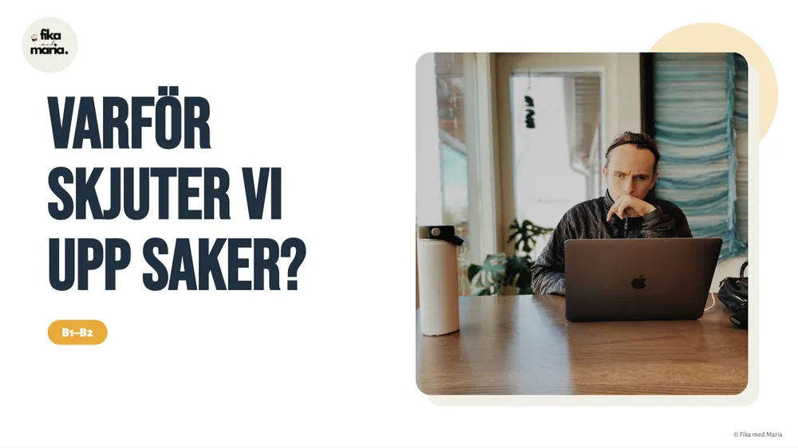

B1–B2Psychologia i człowiek
Varför skjuter vi upp saker?
Dlaczego odkładamy sprawy na później, nawet gdy wiemy, że będzie gorzej. Czytasz, co o tym myślą badacze, uczysz się czasu przyszłego (ska, tänker, kommer att) i razem dzielisz „straszne” zadanie na pięć małych kroków.
4 PDF · Canva · MiroZapytaj o lekcję